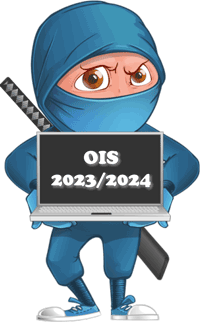
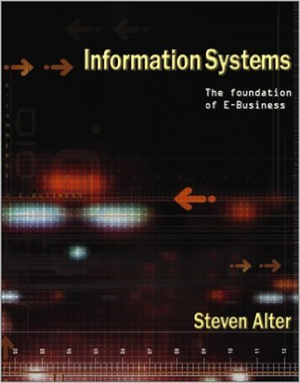

Osnove informacijskih sistemov 2023/2024
torek, 04. junij, 2024
Uvod
Skripta pri predmetu Osnove informacijskih sistemov, ki ga v študijskem letu 2023/2024 izvaja izr. prof. dr. Dejan Lavbič na Fakulteti za računalništvo in informatiko, Univerze v Ljubljani.

Cilj predmeta je študentom računalništva in informatike predstaviti ključne koncepte informacijskih sistemov (angl. Information Systems), različne kategorije informacijskih sistemov in mesto ter vlogo informacijskega sistema v poslovnih sistemih. Pomemben poudarek bo na vlogi in upravljanju informatike (angl. IT governance) pri podpori poslovanju. Znanja, ki jih študenti pridobijo v okviru predmeta, so ključna za razumevanje delovanja in uporabe sodobnih informacijskih sistemov. V okviru laboratorijskih vaj študenti neposredno spoznavajo sodobne informacijske tehnologije in razvojna okolja, ki so namenjena za razvoj računalniških aplikacij za podporo informacijskim sistemom.
Splošne informacije
Dodatno gradivo pri predmetu je na voljo na spletni učilnici, medtem ko vsa komunikacija pri predmetu poteka preko kanala na Microsoft Teams.
Predavatelj
|
izr. prof. dr. Dejan Lavbič
|
Asistent
|
as. Sandi Gec
|
Terminski plan izvajanja predmeta
Predavanja potekajo v četrtek med 11:00 in 14:00 v predavalnici P1, z vmesnimi 15 min odmori.
Konzultacije za vaje so na voljo v naslednjih terminih:
- ponedeljek,
- cikel: 8:00–10:00, PR06,
- torek,
- cikel: 7:00–09:00, PR16,
- cikel: 9:00–11:00, PR17,
- cikel: 11:00–13:00, PR10,
- cikel: 13:00–15:00, PR09,
- sreda,
- cikel: 10:00–12:00, PR09,
- cikel: 12:00–14:00, PR08,
- četrtek,
- cikel: 7:00–9:00, PR07,
- cikel: 9:00–11:00, PR08.
Opomba: Vaje lahko rešujete samostojno, če pa imate težave, se lahko udeležite poljubnega termina vaj, kjer vam bo asistent pomagal pri razumevanju in reševanju naloge.
Vsebina pri predmetu je razdeljena na naslednje sklope:
- 1. sklop: Poslovni informacijski sistemi in upravljanje informatike,
- 2. sklop: Arhitektura celovite programske rešitve,
- 3. sklop: Analiza, načrtovanje in razvoj poslovnih informacijskih sistemov in
- 4. sklop: Infrastruktura in trendi.
| Termin | Predavanja | Vaje | Delo doma |
|---|---|---|---|
| 1. sklop : Poslovni informacijski sistemi in upravljanje informatike | |||
|
1. teden 19. 02. 24–25. 02. 24 kk |
P1 Upravljanje IT | - |
Registracija in oddaja Github računov P1 → V1 Obvladovanje verzij |
|
2. teden 26. 02. 24–03. 03. 24 |
P2 Delovni model, arhitektura podjetja in vrednotenje naložb | V1 Razvoj programske opreme in medsebojno sodelovanje z Git | P2 → V3 HTML in CSS |
|
3. teden 04. 03. 24–10. 03. 24 |
P3 Tveganja, IT naložbeni portfelj in povračilo sredstev | V2 Ocenjevanje stroškov programske opreme | P3 → V3 JavaScript na strani odjemalca |
|
4. teden 11. 03. 24–17. 03. 24 |
P4 Upravljanje sprememb, IS, podatek, informacija, znanje | V3 Razvoj enostavnih odjemalskih aplikacij | P4 → V4 Node.js in odjemalec/strežnik |
| 2. sklop : Arhitektura celovite programske rešitve | |||
|
5. teden 18. 03. 24–24. 03. 24 |
P5 Metamodel delovnega sistema in arhitektura poslovnega informacijskega sistema | V4 Razvoj odjemalec/strežnik aplikacij |
Delo na DN (1. del) spletna aplikacija P5 → V5 Povezovanje na podatkovno bazo |
|
6. teden 25. 03. 24–31. 03. 24 |
P6 Zgodovina, ključne vloge in vrste IS | V5 Pregled pesmi iz podatkovne baze |
Delo na DN (1. del) P6 → V6 Seja, nakupovalna košarica, XML in e-SLOG |
| 3. sklop : Analiza, načrtovanje in razvoj poslovnih informacijskih sistemov | |||
|
7. teden 01. 04. 24–07. 04. 24 Velikonočni ponedeljek (ponedeljek, 01. 04.) |
P7 Razvojni modeli IS in metodologije razvoja | V6 Spletna trgovina e-pesmi |
Delo na DN (1. del) Prijava na 1. kolokvij in izbira načina opravljanja |
|
8. teden 08. 04. 24–14. 04. 24 |
P8 Strukturni razvoj | V7 ER načrtovanje | Delo na DN (1. del) |
|
9. teden 15. 04. 24–21. 04. 24 |
1. kolokvij iz 1. sklopa in 2. sklopa | V8 Normalizacija | Delo na DN (2. del) dopolnitvi načrta in implementacije obstoječe aplikacije |
|
10. teden 22. 04. 24–28. 04. 24 Dan upora proti okupatorju (sobota, 27. 04.) |
P9 Objektno usmerjena analiza, načrtovanje in modeliranje | V9 Teaching API in uvod v objektni razvoj informacijskih sistemov | Delo na DN (2. del) |
|
11. teden 29. 04. 24–05. 05. 24 Praznik dela (sreda, 01. 05.), Praznik dela (četrtek, 02. 05.) |
Predavanja in vaje zaradi praznikov odpadejo. | Delo na DN (2. del) | |
|
12. teden 06. 05. 24–12. 05. 24 |
P10 Objektni razvoj, simulacija razvoja IS za bankomat in simulacija projekta | V10 Objektni pristop k načrtovanju informacijskih sistemov | Delo na DN (2. del) |
| 4. sklop : Infrastruktura in trendi | |||
|
13. teden 13. 05. 24–19. 05. 24 |
P11 Semantični splet in tehnologija veriženja blokov | V11 Klepetalnica |
Delo na DN (2. del) Prijava na 2. kolokvij in izbira načina opravljanja Prijava na preverjanje znanja iz DN in izbira načina opravljanja |
|
14. teden 20. 05. 24–26. 05. 24 |
P12 Računalništvo v oblaku, IT varnost in Marshmallow challenge | V12 Uvod v tehnologijo veriženja blokov | Delo na DN (2. del) |
|
15. teden 27. 05. 24–31. 05. 24 (2. kolokvij - 3. sklop in 4. sklop), preverjanje znanja iz DN) |
2. kolokvij iz 3. sklopa in 4. sklopa, preverjanje znanja iz DN | - | - |
Pravila igre
Predavanja
Na predavanjih bomo v 3 h/teden predstavili osnove informacijskih sistemov v štirih vsebinskih sklopih. Nekaj časa bomo namenili tudi neposrednim pripravam na vaje. V 7. tednu in 15. tednu bosta v elektronski obliki v okviru predavanj potekala (neobvezna) kolokvija iz tekočih vsebinskih sklopov, in sicer 1. kolokvij iz vsebine 1. sklopa in 2. sklopa ter 2. kolokvij iz vsebine 3. sklopa in 4. sklopa.
Za dodatne točke pri predmetu bo ocenjeno tudi (neobvezno) sodelovanje na predavanjih.
Vaje
Navodila za vaje bodo objavljena v začetku tedna in jih lahko opravljate tudi samostojno. V tekočem tednu boste reševali nalogo iz vaj, kjer bo ovrednoteno tudi (neobvezno) sodelovanje.
Vaje so namenjene praktičnemu utrjevanju snovi s predavanj, s poudarkom na 3. sklopu. Vsebina vaj je neposredno povezana z domačo nalogo, ki je sestavljena iz 2 delov:
- DN (1. del) Spletna aplikacija in
- DN (2. del) Dopolnitev načrta in implementacija nove funkcionalnosti.
Oceno vaj boste pridobili na preverjanju znanja iz DN, ki bo potekalo v elektronski obliki v 15. tednu.
Spodnja slika prikazuje obveznosti, povezane z domačo nalogo in povzetek funkcionalnih zahtev, medtem ko so podrobnosti za vsak posamezen del domače naloge na voljo v skladu s terminskim načrtom.
{kind=link}
Ocenjevanje
{kind=link}
\[ \begin{equation} \begin{aligned} \textbf{Končna ocena} =\ &\textbf{Predlog ocene}\ \color{gray}{\small \text{(brez pisnega izpita, na podlagi sprotnega dela)}} \\[0.7em] &\text{ali} \\[0.7em] &50\ \% \cdot \textbf{DN}\ \color{gray}{\small \text{(preverjanje znanja iz domače naloge preko spletne učilnice)}}\ + \\ &50\ \% \cdot \textbf{Pisni izpit}\ \color{gray}{\small \text{(končno preverjanje znanja preko spletne učilnice)}}\ + \\ &\textbf{Sodelovanje} \end{aligned} \end{equation} \]
Pogoj za pozitivno opravljen predmet je \(\textbf{Končna ocena} \boldsymbol{\ge 49,50\ \%}\).
Predlog ocene, brez opravljanja pisnega izpita, velja za študente, ki opravijo oba kolokvija in preverjanje znanja iz domače naloge ter aktivno sodelujejo na predavanjih in vajah.
Priporočena literatura
|
Introduction to Information Systems: Supporting and Transforming Business (Rainer and Prince 2015) |
|
|
 |
Information Systems: Foundation of E-Business (Alter 2002)
|
|
Management Information Systems (O’Brien and Marakas 2010)
|
|
|
Introduction to Business Information Systems (Wigand et al. 2008)
|
|
|
Managing and Using Information Systems, A strategic Approach (Pearlson and Saunders 2012) |